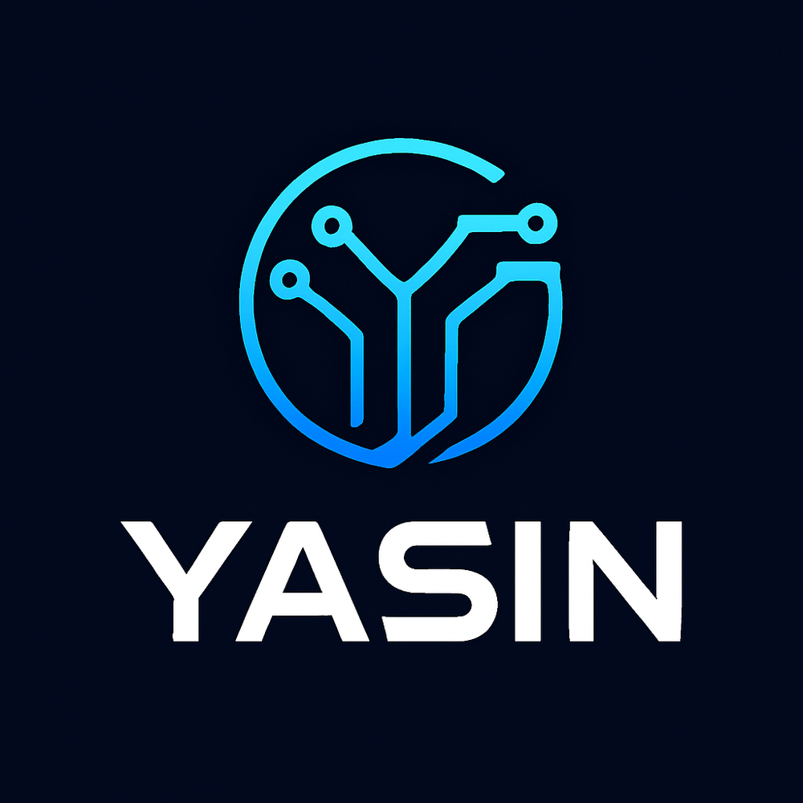

Architecting High-Scale Enterprise Platforms, Healthcare ERPs & Offline-First Solutions.
Results-driven Full-Stack Web Architect and Systems Engineer with over a decade of technical leadership. Founder and Lead Full-Stack Developer since 2017, having single-handedly engineered 162+ production platforms spanning multi-tenant SaaS ERPs, hospital operating systems, and automated retail networks. Served as Focal Person / Junior Executive at NADRA for the National Socio-Economic Registry (NSER) from January 2022 to 12th January 2026, managing mission-critical citizen population data with 100% integrity.
Personal Profile & Qualifications
Verified governmental records, academic credentials, and European EQF competencies
Personal Dossier
Academic Qualifications
| Degree / Level | Period | Board / University | Division / EQF |
|---|---|---|---|
| B.Sc. in Computer Science | 2016 – 2021 | University of Science & Technology Bannu (UST Bannu) | 1st Div • EQF Level 6 |
| Intermediate in Computer Science (ICS) | 2014 – 2016 | BISE Bannu | Grade B (692/1100) • EQF Level 4 |
| Matriculation (Science) | 2013 | BISE Bannu | 1st Div (667/1050) |
Linguistic Competency (EuroPass Framework)
Leadership & Career Journey
A verified track record across independent software engineering and public sector data administration
Spearheaded the end-to-end development of over 50 enterprise-grade web applications, modules, and multi-tenant SaaS platforms for industrial, educational, and commercial clients. Architected factory ERP suites featuring dynamic Bill of Materials (BOM) engines, machine downtime telemetry, QC inspection workflows, and bilingual school ERPs with geofenced GPS radius attendance security. Built JSON-based dynamic payroll engines and custom middleware for CSRF token security and forensic audit logging.
Served as the official Focal Person for the National Socio-Economic Registry (NSER) project under NADRA, handling highly sensitive citizen demographic and socio-economic data with extreme accuracy and compliance. Maintained 100% data integrity and biometric verification standards while directing high-volume data operations and field reporting workflows up to tenure completion on 12th January 2026.
Developed, maintained, and optimized the hospital's official web presence and internal management portals. Streamlined daily digital clinical operations, reducing administrative bottlenecks through automated data entry, medical record-keeping, and OPD queue systems.
Developed custom PHP/MySQL web projects tailored to client specifications. Designed aesthetic, responsive front-end interfaces and integrated dynamic database operations with Ajax.
Technical Expertise Matrix
Deep proficiency across full-stack engineering, offline data engines, and design suites
Web & Backend Engineering
Offline-First & Desktop Compilers
Databases & Administration
Creative Suite & Automation
Flagship Enterprise Systems
Key production platforms engineered with complete offline portability and independent architecture
HMS Pro – Cloud-Ready Hospital Management SaaS
Complete, cloud-ready Hospital Management System built on a secure multi-tenant architecture. The platform streamlines and unifies clinical, administrative, financial, and operational workflows for multiple healthcare facilities into a single interface. Engineered for scalability, processing large volumes of sensitive healthcare data with strict performance and security.

Bannu Bakery Pro – Retail POS & Cafe Management
Enterprise retail and food service platform engineered as an ultra-fast single-file application. Live Kitchen Display System (KDS), table management, ingredient recipe cost tracking, multi-branch syncing, thermal receipt generation, and offline double-entry cashbook.

FeastFlow Pro – Hotel & Restaurant SaaS Platform
High-end hospitality management software with room reservation calendar, banquet booking engine, restaurant dining POS with order dispatching, housekeeping room status board, guest billing, and superadmin multi-property audit logs.

Nur Al-Quran Studio Offline – نور القرآن سٹوڈیو
Groundbreaking offline-first Islamic study station: Surah and Ayah navigation, personal Tafsir builder, Tajweed phonetics rules, verse annotation, thematic tagging, offline audio player, and zero-latency IndexedDB persistence.

BNI Enterprises – Bike Dealership & Installments
Enterprise-grade Business Database Management System (BDMS) specifically designed to handle high-volume stock processing for large-scale dealerships. Developed sophisticated backend logic to automate complex multi-tier tax calculations, multi-party financial accounting, and real-time inventory tracking.

School & Madrasa Management Suite – Iqra / Zakarya
Enterprise educational ERP: Online admission portal, dynamic fee vouchers, student attendance registers, automated exam marks calculation, report card generation, and automated student ID card design and batch printing.

Poor People Welfare – Blood Bank & Donor Network
Full-featured community blood donation network: Donor directory matched by blood group and proximity, urgent emergency requests, drive coordination, automated certificate generation, and emergency dispatch.

ConvertPHPAppToExe – Standalone Desktop Compiler
Complete automation environment that transforms server-side PHP/MySQL web applications into standalone, portable Windows executable files (.exe). Integrates the PHP Desktop Chrome rendering engine with a portable MariaDB server, enabling offline-first, portable deployments without end-user server configuration.
All 162+ Projects Repository
Search, filter, and inspect every production system, utility, and application
Initiate Contact
Reach out for enterprise consulting, high-impact software roles, or architectural leadership